class: center, middle # EE-464 STATIC POWER CONVERSION-II # Isolated Switching Power Supplies ## Ozan Keysan ## [keysan.me](http://keysan.me) ### Office: C-113 <span class="meta">•</span> Tel: 210 7586 --- # Regulated Power Supplies -- - ## Regulated Output Voltage -- - ## Electric Isolation -- - ## Minimum size, weight -- - ## Minimum cost -- - ## Maximum efficiency --- # Linear Regulators -- <img src="https://c.76.my/Malaysia/lm7805-voltage-regulator-arelectronics-1710-24-F582919_1.jpg" alt="Drawing" style="width: 500px;"/> --- # Linear Power Supplies -- 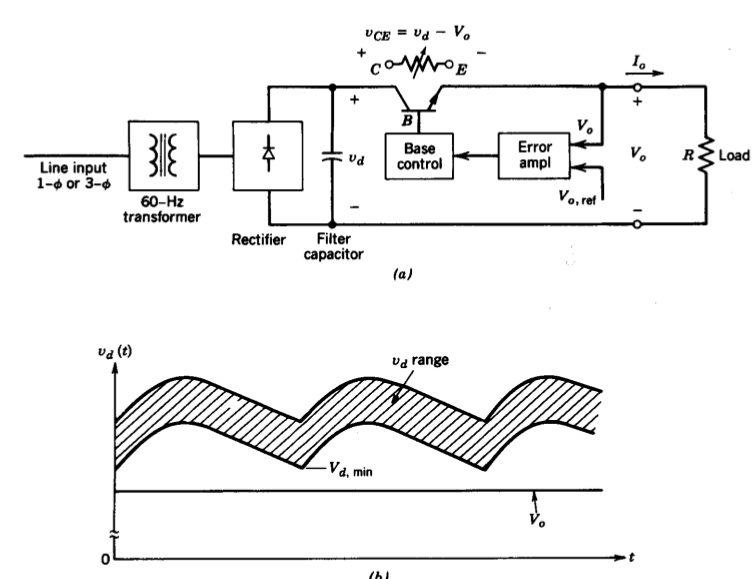 --- # Linear Power Supplies -- - ## Low frequency transformer: large and heavy -- - ## BJT operates in linear region: dissipates heat -- - ## Efficiency is around 30-60% -- - ## Advantage: -- Minimum EMI Problems --- # Switching DC Power Supply -- 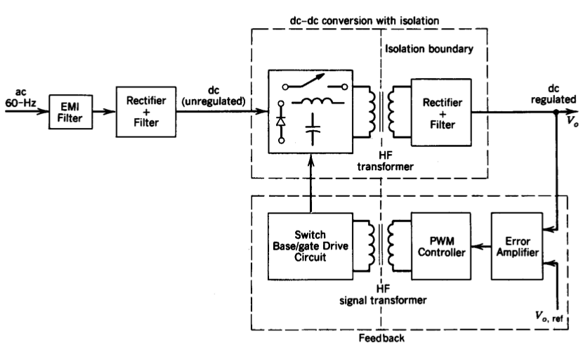 --- # Switching DC Power Supply -- ## Multiple Output Case 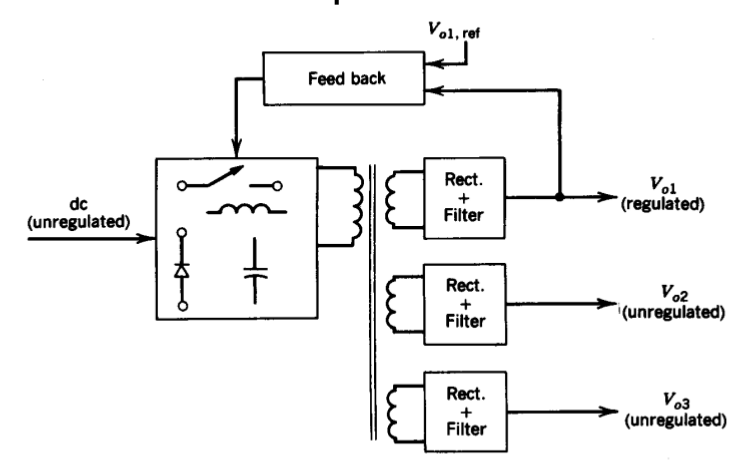 --- # Case Study: -- ## [Apple Charger Teardown](http://www.righto.com/2015/11/macbook-charger-teardown-surprising.html) <img src="http://static.righto.com/images/magsafe/inside-w600.jpg" alt="Drawing" style="width: 600px;"> --- ## [Apple Charger Teardown](http://www.righto.com/2015/11/macbook-charger-teardown-surprising.html) <img src="http://static.righto.com/images/magsafe/components1-w750.png" alt="Drawing" style="width:600px;"> --- ## New Versions of Chargers - ## [Apple 20W USB-C Charger Teardown](https://www.youtube.com/watch?v=W-FlBXTAKDs) - ## [Teardown Apple 140W USB-C GaN Charger](https://www.chargerlab.com/teardown-of-brand-new-apple-140w-usb-c-gan-charger/) - ## [USB Type-C PD: Power Delivery](https://www.st.com/content/ccc/resource/sales_and_marketing/presentation/product_presentation/group0/5a/b1/8e/6c/2b/0d/46/3c/Apec/files/APEC_2016_USB_Power.pdf/_jcr_content/translations/en.APEC_2016_USB_Power.pdf) - ## [A Primer on USB Type-C and USB Power Delivery](https://www.ti.com/lit/wp/slyy109a/slyy109a.pdf) --- # Flyback Converter 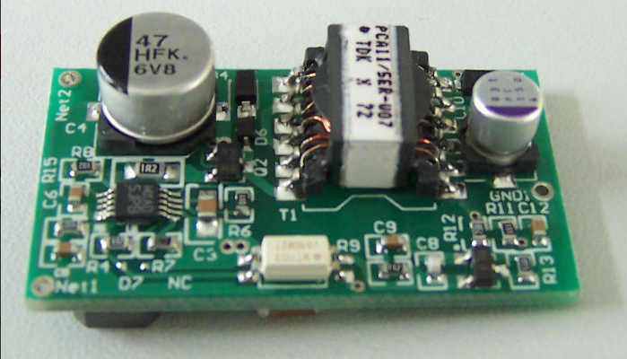 --- # Flyback Converter Evolution 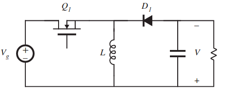 ## Start from the buck-boost converter --- # Flyback Converter Evolution 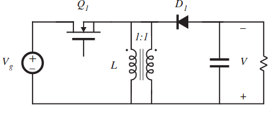 ## Wound the inductor with two parallel wires ### Don't get confused with the dots yet! --- # Flyback Converter Evolution 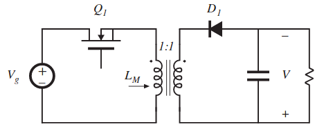 ## Isolate inductor wires (isolated converter) --- # Flyback Converter Evolution 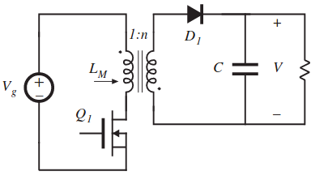 ## Modify turns ratio to adjust output voltage and direction to get positive output --- # Back to EE361 -- ## Ideal Transformer -- 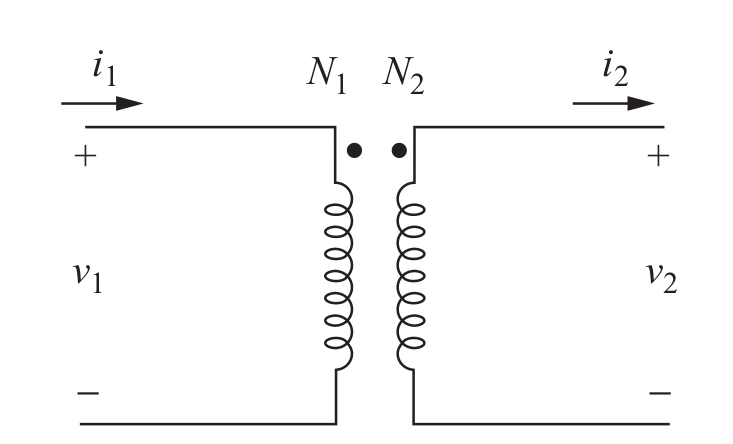 --- # Back to EE361 ## Ideal Transformer 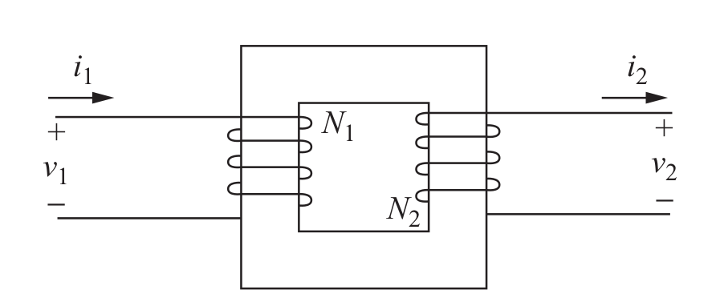 --- # Back to EE361 -- ## Realistic Transformer Equivalent Circuit -- 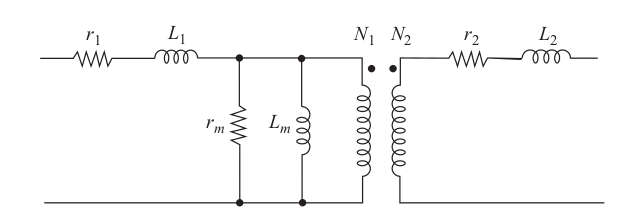 --- # Flyback Converter ## Let's ignore resistive parts and leakage flux for now 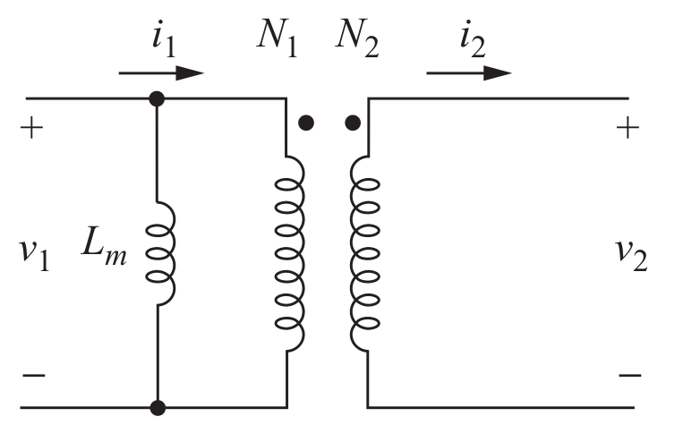 --- # Flyback Converter with Transformer 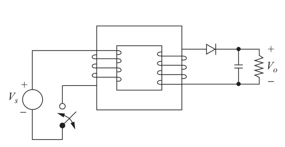 --- # Flyback Converter with Transformer <img src="./images/ee464/flyback_schematic2.png" alt="Drawing" style="width: 600px;"> ## Can you plot the operating modes? --- # Flyback Converter ## Switch ON 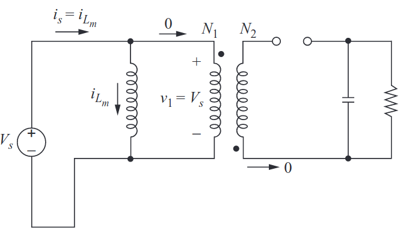 --- # Flyback Converter ## Switch OFF 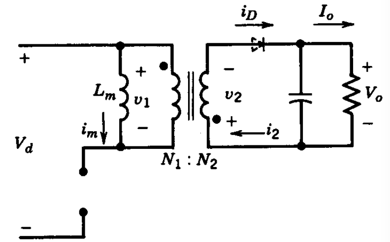 --- # [Flyback Converter](https://www.plexim.com/academy/power-electronics/flyback-conv) 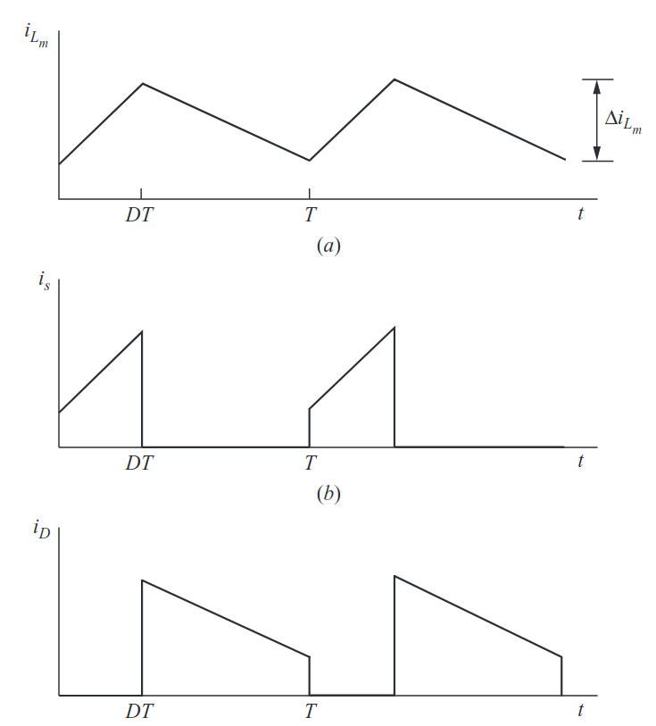 --- # [Flyback Converter](https://www.plexim.com/academy/power-electronics/flyback-conv) 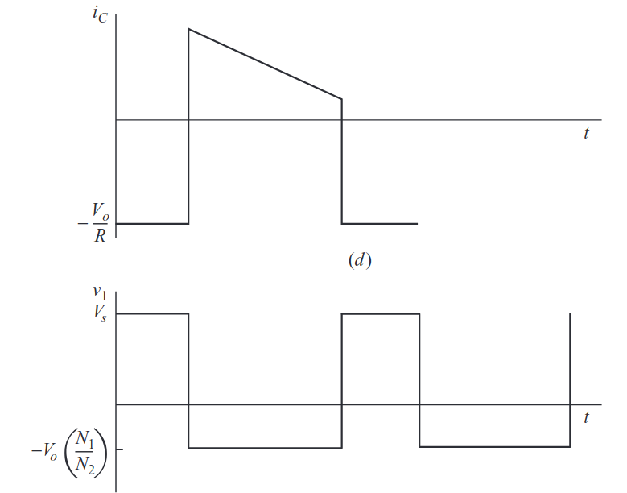 --- # Flyback Converter ### Conversion ratio can be calculated in three different ways: - ### Magnetic Circuit: Transformer Flux - ### Steady state current - ### Graphically: Voltage-seconds area of the inductor -- # \\(\dfrac{V_o}{V_d} = \dfrac{D}{(1-D)} \dfrac{N_2}{N_1} \\) --- ## Switch Selection -- ### Peak Switch Current -- ### \\(\hat{I}_{sw}= \dfrac{1}{(1-D)} \dfrac{N_2}{N_1} I\_o + \dfrac{N\_1}{N\_2} \dfrac{(1-D)T\_s}{2L\_m}V\_o\\) -- ### Peak Switch Voltage -- ### \\( \hat{V}_{sw} = V\_d + \dfrac{N_1}{N_2}V\_o\\) -- \\(=\dfrac{V\_d}{(1-D)}\\) --- # Flyback Converter: DCM 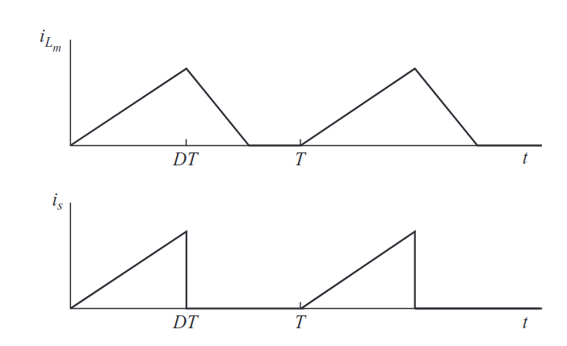 --- # Flyback Converter: DCM <img src="https://media.monolithicpower.com/wysiwyg/3_45.png" alt="Drawing" style="width: 600px;"> #### Voltage and currents in CCM, (VD: Diode voltage, VDS:transistor drain-source voltage) --- # Flyback Converter: DCM <img src="https://media.monolithicpower.com/wysiwyg/4_39.png" alt="Drawing" style="width: 600px;"> #### Voltage and currents in CCM, (VD: Diode voltage, VDS:transistor drain-source voltage) --- ### Flyback DCM vs CCM ### Efficiency is usually higher: -- - ### Soft turn-on for transistor (reduced switching loss) - ### no reverse recovery loss in the diode -- ### Smaller core (better flux density utilization) -- ### Current peaks get higher -- - ### Higher current rating for diode and transistor - ### Can cause increase in conduction losses -- ### DCM has a better stability in transient control --- # Flyback Example ### Hart 7.1 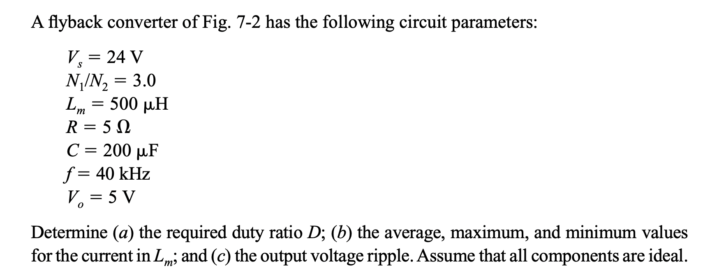 --- # Reading Materials - ## [The Flyback Converter](https://pdf4pro.com/view/the-flyback-converter-university-of-colorado-boulder-5bb172.html) - ## [Flyback transformer tutorial: function and design](https://www.eetimes.com/document.asp?doc_id=1273089) - ## [Flyback Converter Video](https://training.ti.com/understanding-basics-flyback-converter) - ## [Designing a DCM flyback converter](https://www.edn.com/power-tips-98-designing-a-dcm-flyback-converter/) - ## [Flyback DCM vs CCM](https://www.icbanq.com/icbank_data/online_seminar_image/Flyback_CCMVsDCM_Rev1p2.pdf) - ## [The Difference between CCM and DCM Explained](https://www.monolithicpower.com/en/the-difference-between-ccm-and-dcm-explained) --- # Flyback Variations: Two Transistor Flyback -- 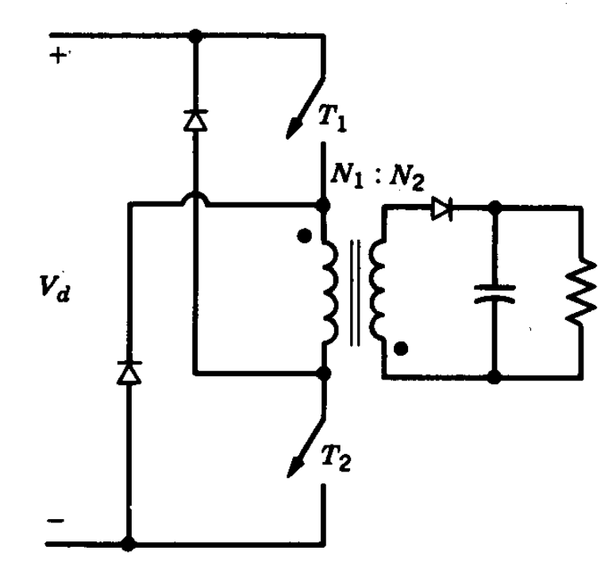 - #### [Improving the Performance of Traditional Flyback with Two Switch Approach](https://www.ti.com/lit/an/snva716/snva716.pdf) - #### [Operation & Benefits of Two-Switch Forward/Flyback Power Converter Topologies](https://www.embedded.com/operation-benefits-of-two-switch-forward-flyback-power-converter-topologies/) --- # Flyback Variations: Paralled Flyback -- 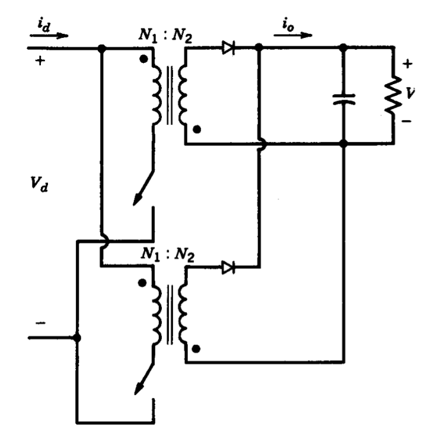 --- # Forward Converter -- ## Derived from the Buck Converter 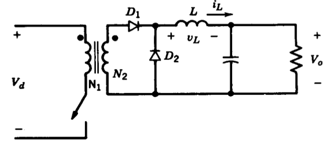 --- # Forward Converter ## Let's obtain the output voltage characteristics <!-- ## Can you obtain the output voltage characteristics? # Quiz -Q1 # Quiz -Q2 ## Choose a duty cycle and turns ratio, to get 12V DC from a 200V DC input. --> --- # Forward Converter ## A buck converter with added turns ratio # \\(\dfrac{V_o}{V_d} =\dfrac{N_2}{N_1} D \\) --- # Forward Converter ## What happens at the instant when the switch is turned-off, if the transformer is not ideal? --- # Forward Converter ## A discharging path for Lm should be added. --- # Simple Solution: RCD Reset Circuit <img src="./images/ee464/forward_rcd.png" alt="Drawing" style="width: 750px;"> ## Magnetizing current dissipates through RCD circuit --- # Simple Solution: RCD Reset Circuit <img src="./images/ee464/forward_rcd.png" alt="Drawing" style="width: 750px;"> ## Cheap but inefficient --- # RCD Snubber ### Note a similar circuit can be used for the Flyback converter (to reduce inductance leakage ringing) -- 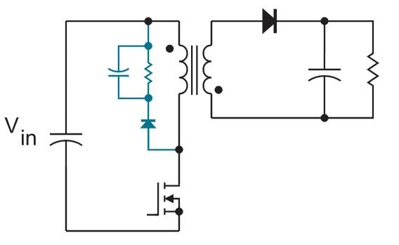 ### Suggested Reading: [Flyback Converter Snubber Design](http://ridleyengineering.com/images/phocadownload/12%20flyback%20snubber%20design.pdf) --- # Practical Forward Converter 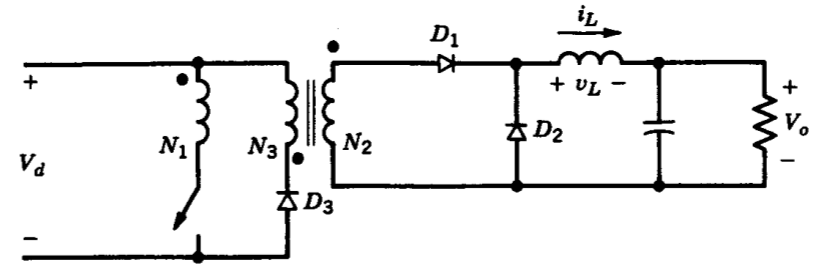 ## A transformer with two-primary windings ### Third winding is added to discharge the energy stored in Lm --- # Practical Forward Converter 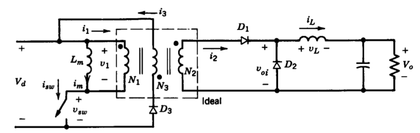 ## A transformer with two-primary windings ### Third winding is added to discharge the energy store --- # Forward Converter 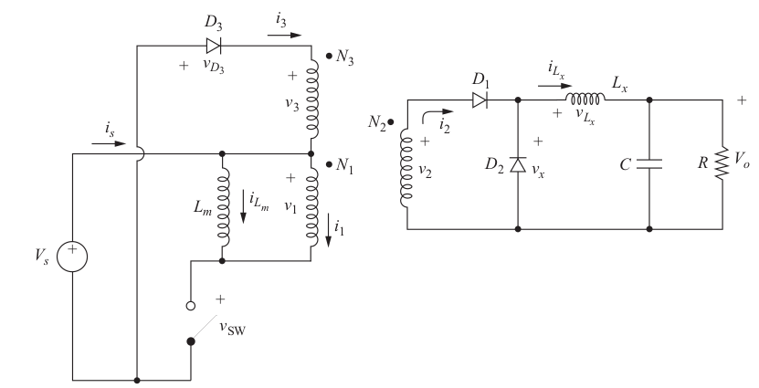 --- ## Forward Converter: Switch is ON 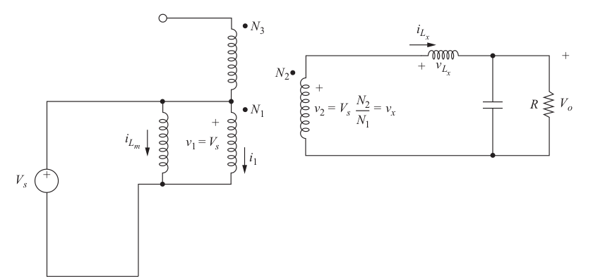 ### Lm is charged by input voltage, Lx is also charging ### D1 On, D2 Off, D3 Off --- ## Forward Converter: Switch is OFF 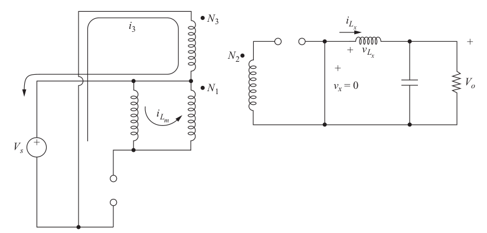 ### Lx feeds the load, Lm is discharged to the source: \\(i\_{1} = - i\_{Lm} \\) ### KCL: \\(N_1 i_1 = N_2 i_2 - N_3 i_3\\) ### For proper operation the transformer should be "reset" before next ON period --- ## Forward Converter: Switch is OFF --- ## Forward Converter 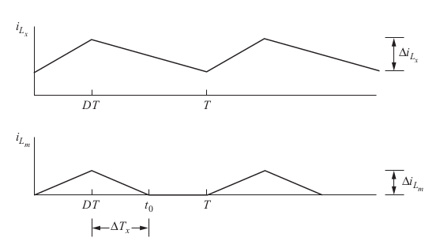 --- ## Forward Converter 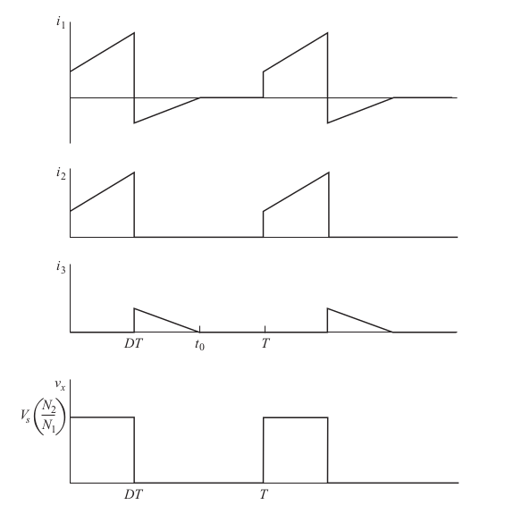 --- # Practical Forward Converter ### For proper operation the transformer should be "reset" before next ON period ## \\(t\_m < (1-D) T\_s\\) -- ## \\(D\_{max}\\) -- \\(=\dfrac{1}{1+ (N\_3 / N\_1)}\\) --- ### What happens if D is large, and transformer does not reset completely? -- 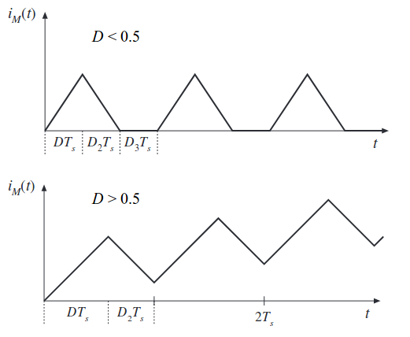 #### In the figure Dmax=0.5 ### Saturation, increased core losses, reduced Lm, problem in power transfer --- # Advantages over Flyback - ## Better utilization of transformer (direct power transfer, higher) - ## A gapless core can be used (higher Lm, less ripple) - ## Output inductor and diode ensure continuous output current --- # Drawbacks compared to Flyback - ## Increased cost (extra diode and inductor) - ## Gain changes a lot in DCM - ## Higher voltage requirement for MOSFET --- # Forward Converter Alternatives -- ## Two-switch forward converter 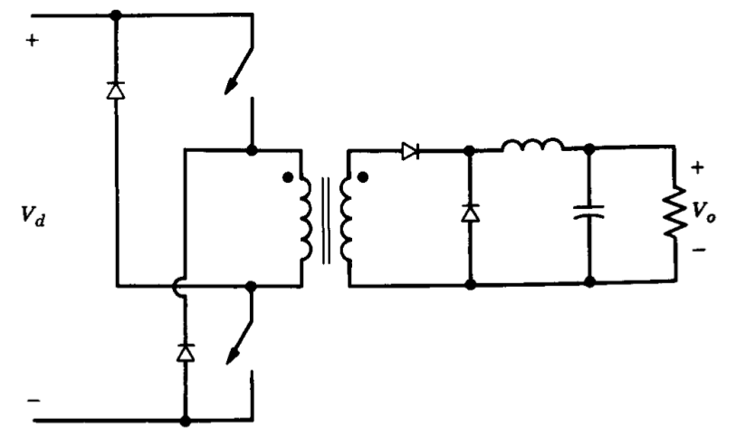 --- # Forward Converter Alternatives ## Two-switch forward converter 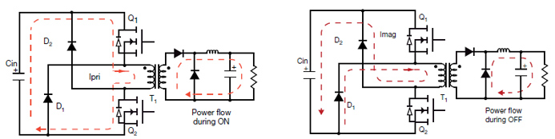 --- # Two-switch forward converter # Advantages: - ## Does not require a snubber circuit - ## Less voltage stress on MOSFETs - ## Can supply multiple isolated outputs - ## Low power losses and noise --- # Two-switch forward converter # Disadvantages: - ## Slightly more expensive - ## Higher component count --- ## Interleaved forward converter 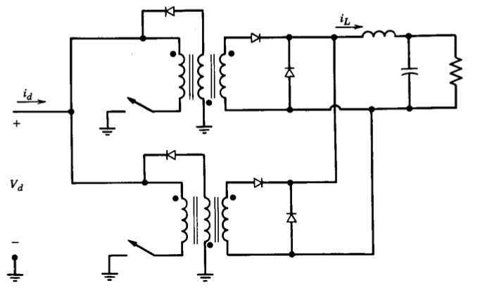 --- # Forward Converter Reading Materials - ## [Infineon, Forward Converter Design Note](https://www.mouser.com/pdfdocs/2-10.pdf) - ## [Fairchild Forward Converter Application Note](https://www.onsemi.com/pub/Collateral/AN-4134.PDF) --- # Example: ## Hart - Power Electronics Ex. 7-4 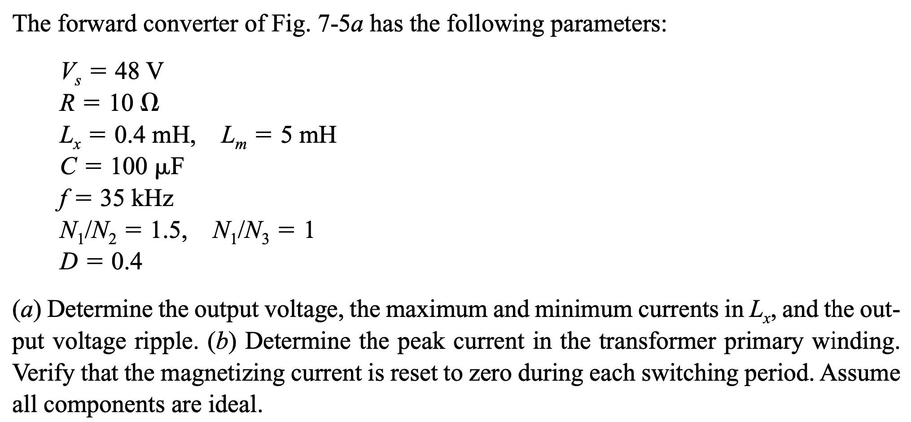 --- # Example: ## Hart - Power Electronics Ex. 7-4 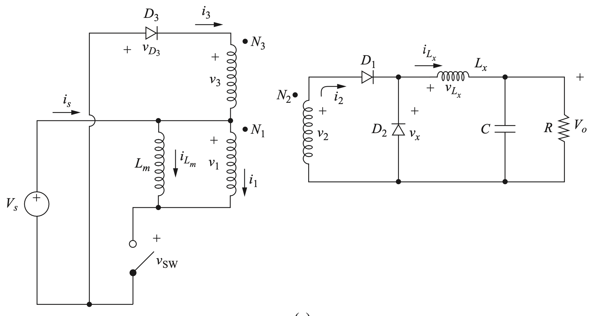 --- # Push-Pull Converter -- 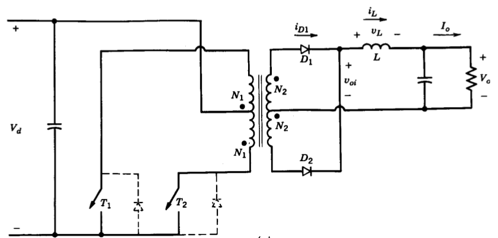 ### Uses a center-tapped transformer --- # Push-Pull Converter 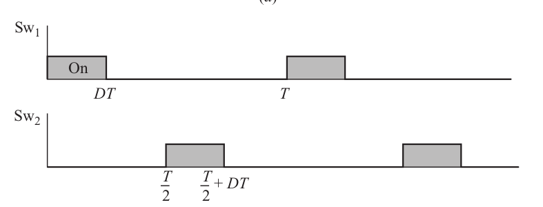 ### Three operating sections --- # Push-Pull Converter ## Switch(T1) ON, Switch(T2) OFF ### D1 conducts, D2 reverse-biased -- ### \\(v\_{x}= \dfrac{N\_2}{N\_1} V\_s \\) -- ### \\(v\_{L}= v\_{x} - V\_o = \dfrac{N\_2}{N\_1} V\_s - V\_o \\) ### \\(i\_L\\) increases linearly --- # Push-Pull Converter ## Switch(T2) ON, Switch(T1) OFF ### Symmetrical operation with the previous ### \\(v\_{x}= \dfrac{N\_2}{N\_1} V\_s \\) -- ### \\(v\_{L}= v\_{x} - V\_o = \dfrac{N\_2}{N\_1} V\_s - V\_o \\) ### \\(i\_L\\) increases linearly --- # Push-Pull Converter ## Both Switches are OFF ### for a period of \\(\Delta\\) -- ### Both D1 and D2 conducts ### \\(I\_{D1} = I\_{D2} = 0.5 I\_{L} \\) ### \\(v\_{x}= 0 \\) -- ### Therefore \\(v\_{L}= -V\_o \\) ### Inductor discharges and feeds the load --- ### Repeating waveforms for every Ts/2 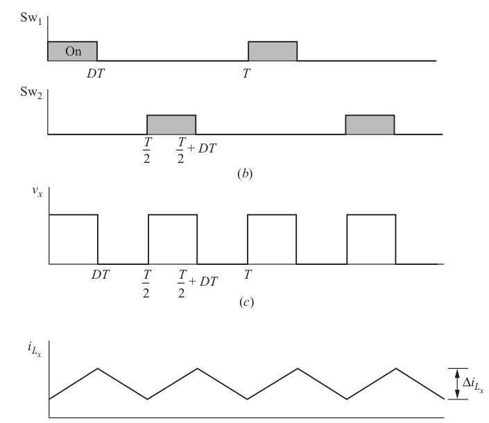 --- # Push-Pull Converter ## Repeating waveforms for every Ts/2 ## \\(D T\_s + \Delta = \dfrac{T\_s}{2} \\) ## \\(\Delta = \dfrac{(1-2D)}{2}T\_s \\) --- # Push-Pull Converter ## Output voltage characteristics? -- ## Use the inductor voltage -- # \\(\dfrac{V_o}{V_d} =\dfrac{2N_2}{N_1} D \\) ### Twice of the forward converter --- # Push-Pull Converter ### Comparison of Magnetic Flux in the Core 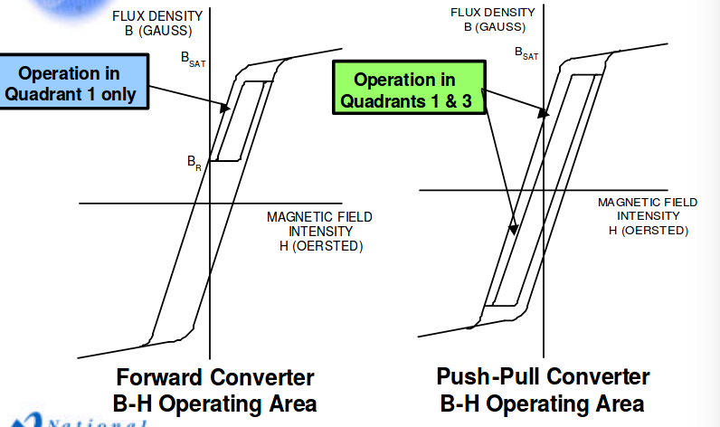 --- # Extra Materials ## Flyback Converter #### [ECEN4517 Lecture Notes](http://ecee.colorado.edu/ecen4517/materials/flyback.pdf) #### [Flyback Transformer Tutorial](https://www.eetimes.com/document.asp?doc_id=1273089) #### [Optimised Flyback Design](http://www.eenewspower.com/content/step-step-optimised-flyback-design) #### [Switch Mode Power Supply (SMPS) Topologies](http://ww1.microchip.com/downloads/en/AppNotes/01207B.pdf) #### [ECE5797 SMPSs](http://ecee.colorado.edu/~ecen5797/course_material/Ch6slides.pdf) #### [Flyback Converter, Transformer Design](https://coefs.uncc.edu/mnoras/files/2013/03/Transformer-and-Inductor-Design-Handbook_Chapter_13.pdf) #### [Design Guide Flyback Converter](https://www.fairchildsemi.com/application-notes/AN/AN-4137.pdf) #### [Design Guidelines for Flyback Converter](https://www.monolithicpower.com/Portals/0/Documents/Products/Documents/appnotes/AN069_r1.0.pdf) ### [Transformer Design Cookbook](https://www.digikey.com/Web%20Export/Supplier%20Content/Wurth_732/PDF/Wurth_CookbookforTransformerDesign.pdf?redirected=1) --- # Extra Materials ## Forward Converter ### [Forward Converter, Transformer, Inductor Design](https://coefs.uncc.edu/mnoras/files/2013/03/Transformer-and-Inductor-Design-Handbook_Chapter_14.pdf) ### [Forward Converter Design](https://www.mouser.com/pdfdocs/2-10.pdf) ### [Forward Converter Tutorial Video](https://training.ti.com/topology-tutorial-what-forward-converter) --- # Design Exercise -- ## [Forward Converter Design](https://www.mouser.com/pdfdocs/2-10.pdf) ### [ETD 34/17/11](https://www.tdk-electronics.tdk.com/inf/80/db/fer/etd_34_17_11.pdf) -- ### [Skin Effect Calculator](https://www.allaboutcircuits.com/tools/skin-depth-calculator/) ### [AWG Conductors](https://en.wikipedia.org/wiki/American_wire_gauge) --- ## You can download this presentation from: [keysan.me/ee464](http://keysan.me/ee464)